スローカム・ジョー [企業]
スローカム・ジョーは、マサチューセッツ州モールデンに拠点を置いていた、戦前のコーヒーとドーナツの企業です。
基本データ
業界は飲食業です。
主な製品には、コーヒー、ドーナツ、およびスローカムのバズバイトがあります。
主な活動拠点はアメリカ合衆国で、モールデンに企業本部を置いていました。
背景
スローカムは、「ジョー（コーヒー）」と「ドーナツ」の2点に焦点を当てていました。
提供される食品の多くが1日の推奨炭水化物量や脂肪量を超えており、不健康であったにもかかわらず、このチェーンは驚異的な人気を維持していました。
その人気は、レキシントンにある第38号店のように、国防情報局（DIA）の施設を隠すための隠れみのとして、あえて客を遠ざけようとしていた店舗でさえ、客を追い払うのに苦労したほどでした。
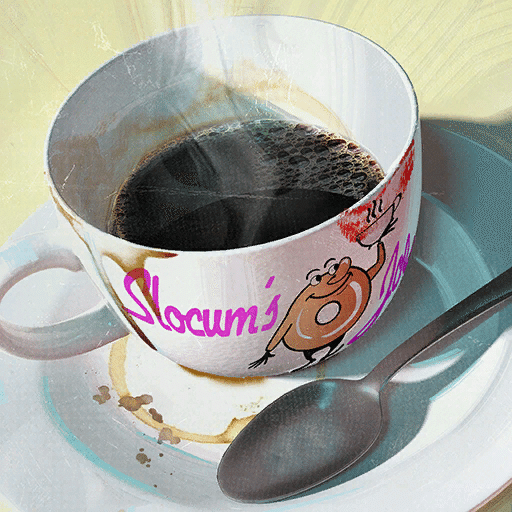
同社のコーヒーは、一部の人々（料理評論家のグレン・ラモスなど）からは、古くて酸味が強すぎると評されていました。
また、価格も非常に高価で、コーヒー1杯が28ドル、大きなゼリードーナツとセットで購入すると30ドルもしました。
スローカムは常に競合の一歩先を行こうとしており、コーヒーを熱いまま保ち、ドーナツを新鮮に保つという課題の解決に取り組んでいました。
その回答がスローカムのバズバイトでした。
これは熱いコーヒーが詰まった美味しいドーナツで、熱さを維持するために化学的な保存処理が施されていましたが、消費者に三度熱傷を負わせる確率が90%もありました。
このため、当局によって流通させるには危険すぎると判断されました。
最終戦争後、生存者たちにとってのスローカム・ジョーの遺産は様々です。
地元のコーヒーショップが失われたことでコミュニティが失われたことを嘆く者もいれば、価格が高すぎると罵り、それらがなくなったことを喜ぶ者もいました。
同社のマスコットはドウ・ボーイで、ラジオや印刷広告に登場していました。
製品および関連アイテム
スローカムのバズバイト
コーヒー
ドーナツ
カプチーノ
コーヒー・マティーニ
ダブル・エスプレッソ
新鮮なコーヒー
アイリッシュ・コーヒー
ジャマイカ・コーヒー
ケンタッキー・コーヒー
オーバー・ザ・ムーン
クアンタム・カフェネーター
アッシュ・ブロッサム・ティー
ブラッドリーフ・ティー
ハブフラワー・ティー
マットフルーツの葉のティー
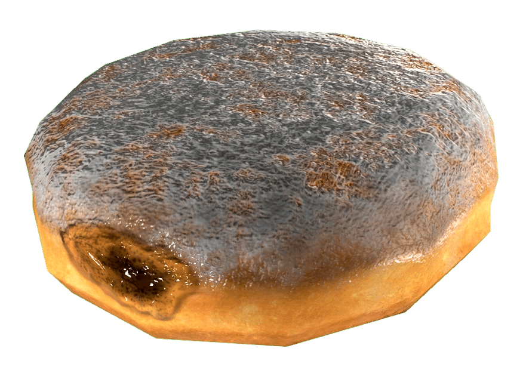
リンゴ入りドーナツ
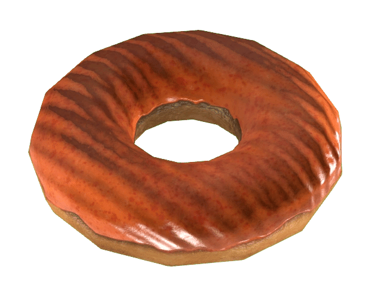
アトミック・オレンジ・ドーナツ
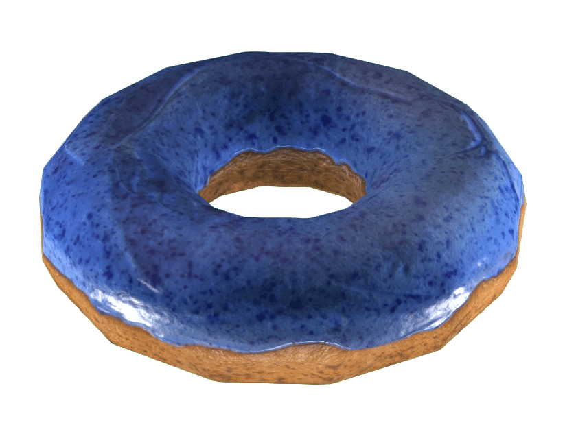
ブルーベリー・ブラスト・ドーナツ
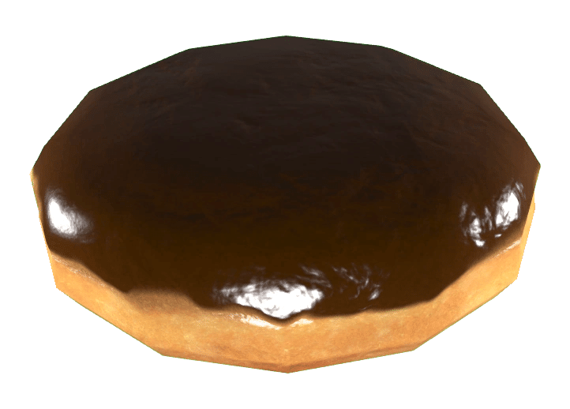
ボストン・クリーム・ドーナツ
チョコレート・バー・ドーナツ
チョコ・グレーズ・ドーナツ
クラシック・グレーズ・ドーナツ
クラシック・スイートロール
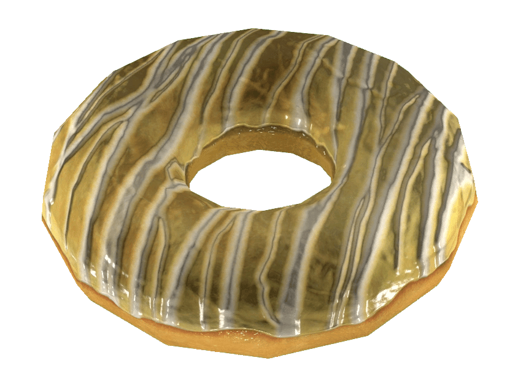
ディーザーのレモンケーキ・ドーナツ
ファッジ・フュージョン・ドーナツ
マジェスティック・メープル・ドーナツ
メープル・バー・ドーナツ
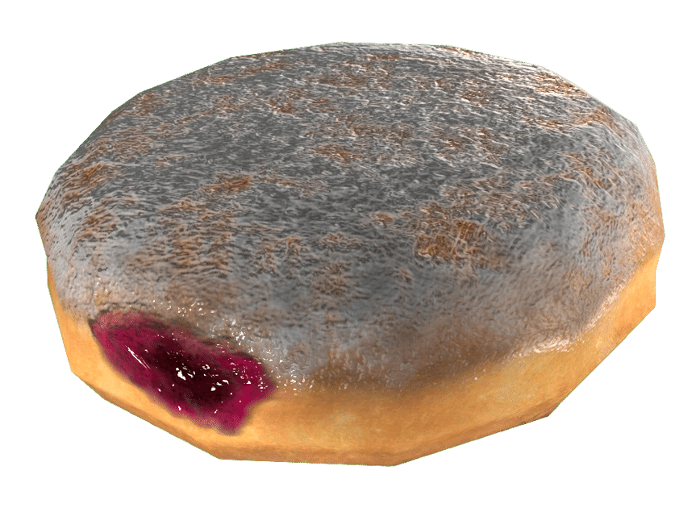
マットフルーツ入りドーナツ
オールド・グローリー・ドーナツ
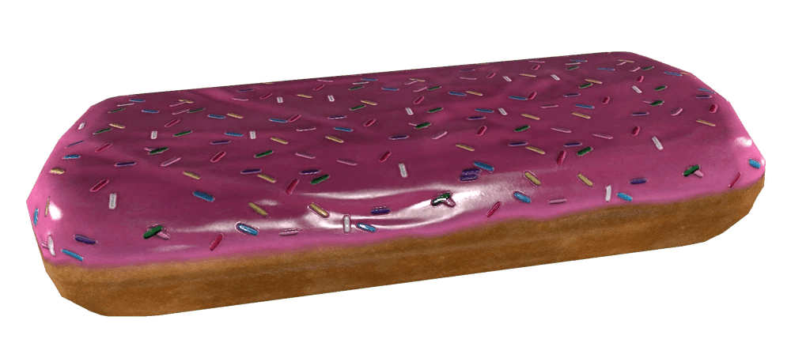
ピンク・スプリンクル・バー・ドーナツ
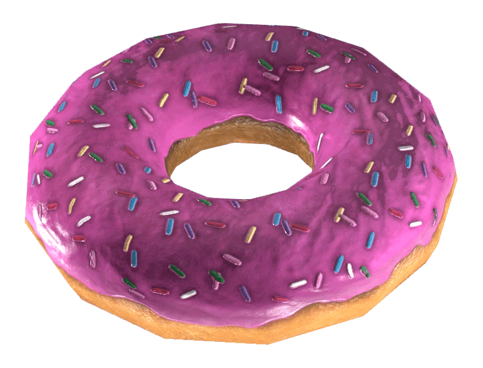
ピンク・スプリンクル・ドーナツ
パウダー・ドーナツ
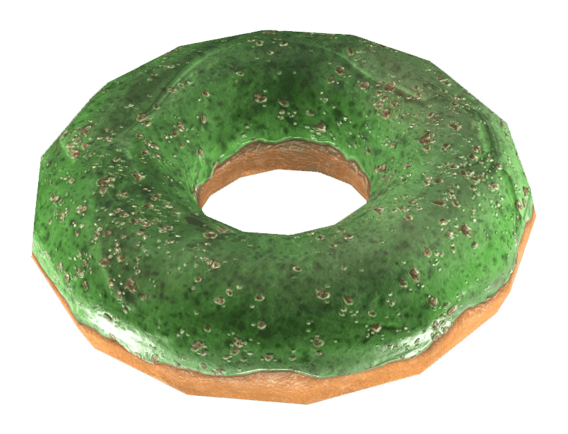
パワー・ピスタチオ・ドーナツ
パンプキン・スパイス・ドーナツ
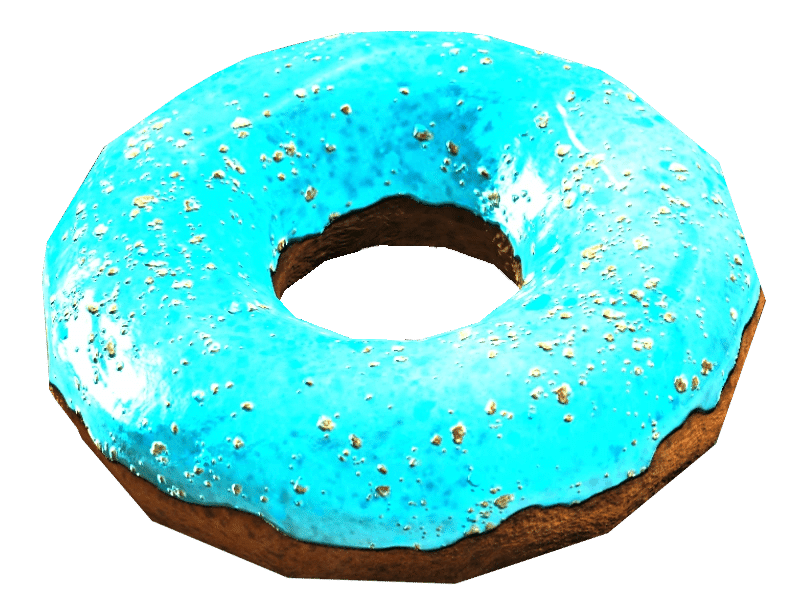
クアンタム・クランチ・ドーナツ
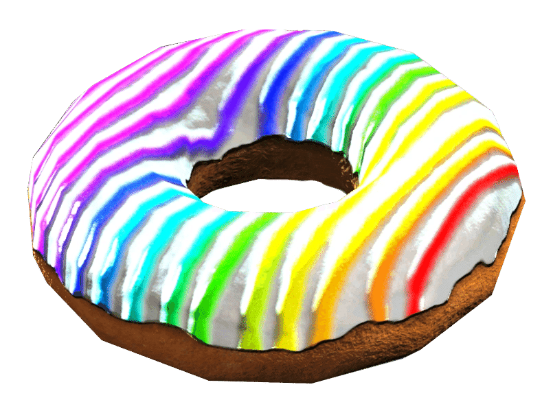
レインボー・ドーナツ
ランダムな12個入りのドーナツ
シズリン・ストロベリー・ドーナツ
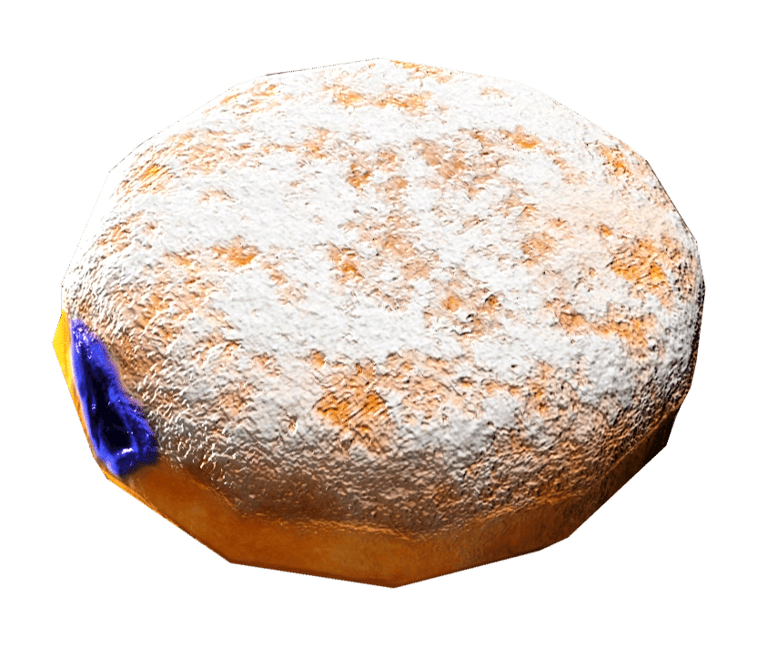
タールベリー入りドーナツ
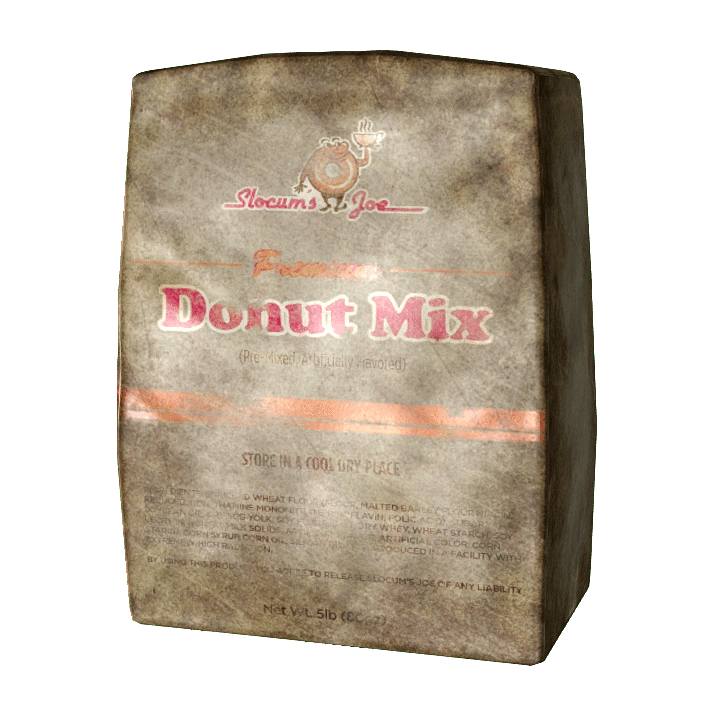
ドーナツミックス
場所
アパラチアにおいては、以下の場所に店舗が存在します。
ワトガ・ショッピングプラザ
モーガンタウン（2箇所のロケーション）
チャールストン
舞台裏
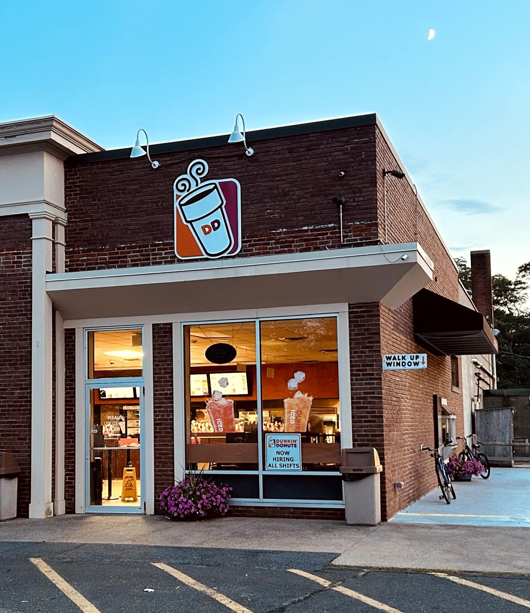
スローカム・ジョーは、1950年にマサチューセッツ州クインシーで設立された実在の企業、ダンキンドーナツをモデルにしています。
ダンキンドーナツも同様に、ボストン近郊のマサチューセッツ州カントンに本社を置いています。
また、「スローカムのバズバイト」のレシピは『Fallout: The Vault Dweller's Official Cookbook』にも掲載されています。
登場作品
スローカム・ジョー は Fallout 4 および Fallout 76 に登場します。
海賊放送の広告
「皆さん、おはようございます！ 今朝はお疲れですか？ 朝型人間ではありませんか？ それとも、一日を始めるための良い飲み物を探しているだけでしょうか？ さあ、スローカム・ジョーに来るのが正解です！」
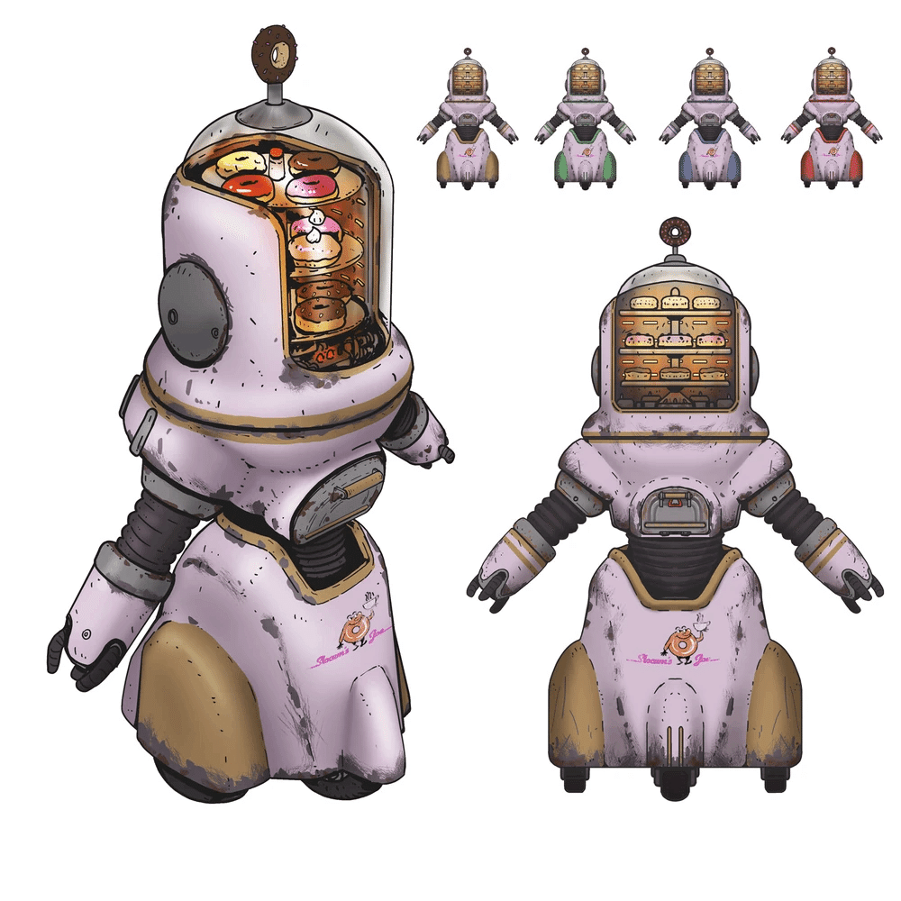
ハイパーインフレの再確認: グレン・ラモスのレビューでも触れられていた「コーヒー1杯28ドル」という価格が、公式の企業背景としても裏付けられました。
膨大なメニュー: ドーナツの種類の多さは、戦前のアメリカがいかに「不健康な豊かさ」に溢れていたかを感じさせます。
コミュニティ維持のため、寄付を受け付けております。
> COMMENTS